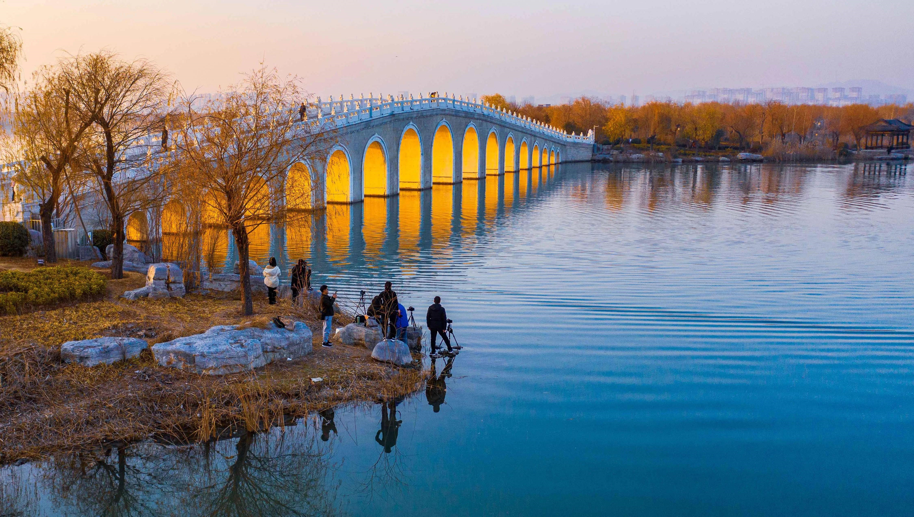
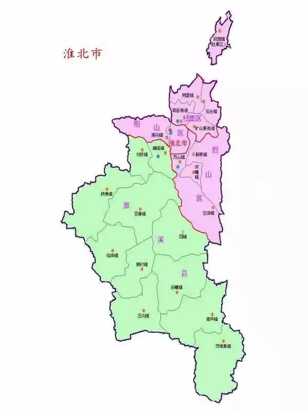

A city of ancient origins and modern aspirations in Northern Anhui
Huaibei, affectionately known as Xiangcheng (City of Xiang), is a prefecture-level city located in the northern part of Anhui Province, China. The city's terrain gently slopes from northwest to southeast, and it enjoys a warm temperate semi-humid monsoon climate that brings distinct seasons and pleasant weather throughout the year.
With a total area of 2,741 square kilometers and a population of approximately 1.95 million people, Huaibei is one of the most important resource-based cities in China. However, what truly sets this city apart is its remarkable journey of green transformation, evolving from a traditional coal mining center into a national garden city and a model for sustainable urban development.
The city has earned numerous national accolades including National Hygienic City, National Garden City, National Advanced City for Scientific and Technological Progress, National Barrier-Free City, Smart City, National Advanced Entrepreneurial City, and National Civilized City.
The vibrant cultural tapestry that defines Huaibei's unique identity
As a representative city of Huai River culture, Huaibei embodies the unique characteristics of this ancient civilization. The Huai River basin has nurtured a distinct cultural identity that blends northern boldness with southern elegance, creating traditions that are celebrated throughout the region.
Huaibei's coal mining history spans over a century and has shaped the city's character. The spirit of hard work, resilience, and community solidarity born in the mines continues to define the local identity. Heritage sites and museums preserve this important industrial legacy.
The ancient Sui-Tang Grand Canal flows through Huaibei, leaving behind a rich legacy of canal culture. The canal brought prosperity, diverse peoples, and cultural exchange, creating a unique blend of traditions that continues to influence local customs and architecture.
As a key battleground during the Huaihai Campaign, Huaibei carries deep revolutionary heritage. Memorial sites including the former headquarters of the campaign's front committee and the Shuangduiji battlefield preserve the memory of this transformative period.
Huaibei is home to a wealth of folk art traditions including paper cutting, clay sculpture, and traditional embroidery. These artisanal crafts have been passed down through generations and represent the creative spirit of the local people.
The ancient town of Lintong in Huaibei is famous for its centuries-old tea culture. Local teahouses have been gathering places for community members for hundreds of years, and the unique tea-serving rituals of the region are recognized as important cultural heritage.
